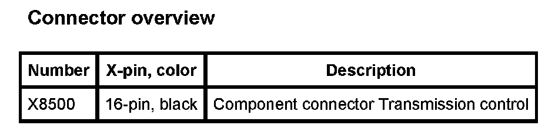

Operation CHARM
: Car repair manuals for everyone.
Home
>>
BMW
>>
2007
>>
X3 3.0si (E83) L6-3.0L (N52K)
>>
Repair and Diagnosis
>>
Relays and Modules
>>
Relays and Modules - Transmission and Drivetrain
>>
Relays and Modules - A/T
>>
Control Module
>>
Diagrams
>>
A7000a Transmission Control (X Series_X3-E83 With N52 Engine)
A7000a Transmission Control (X Series_X3-E83 With N52 Engine)
A7000a Transmission Control:
